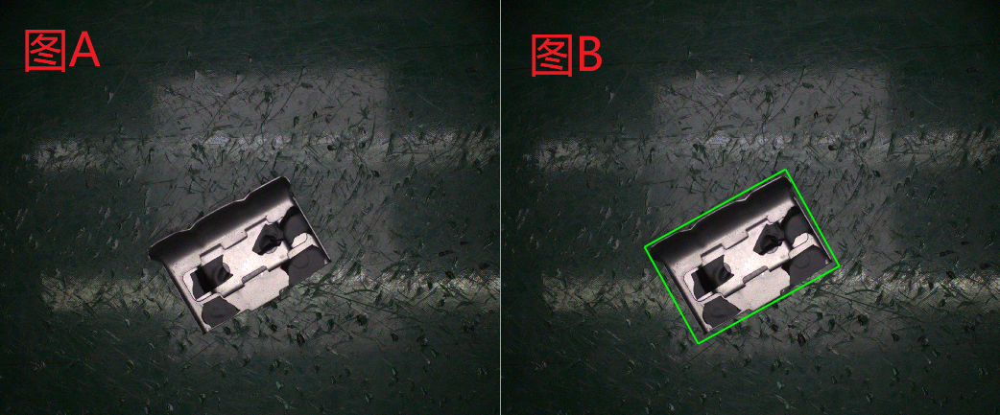
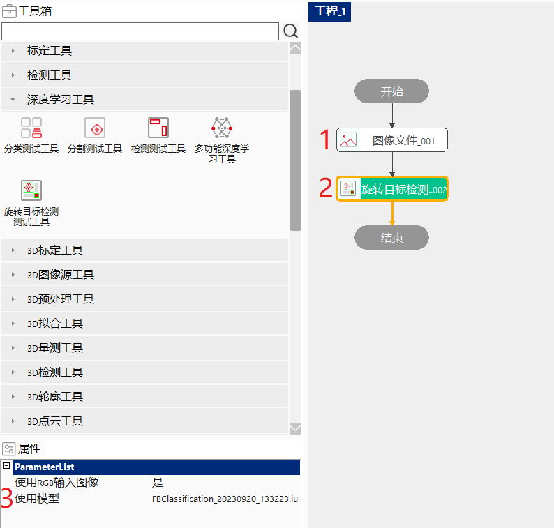
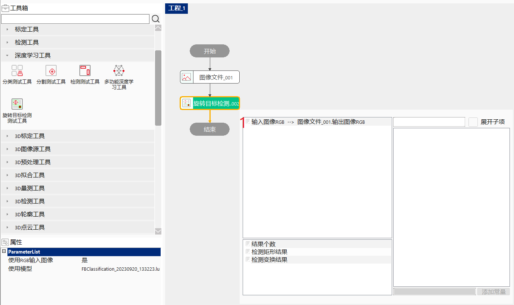
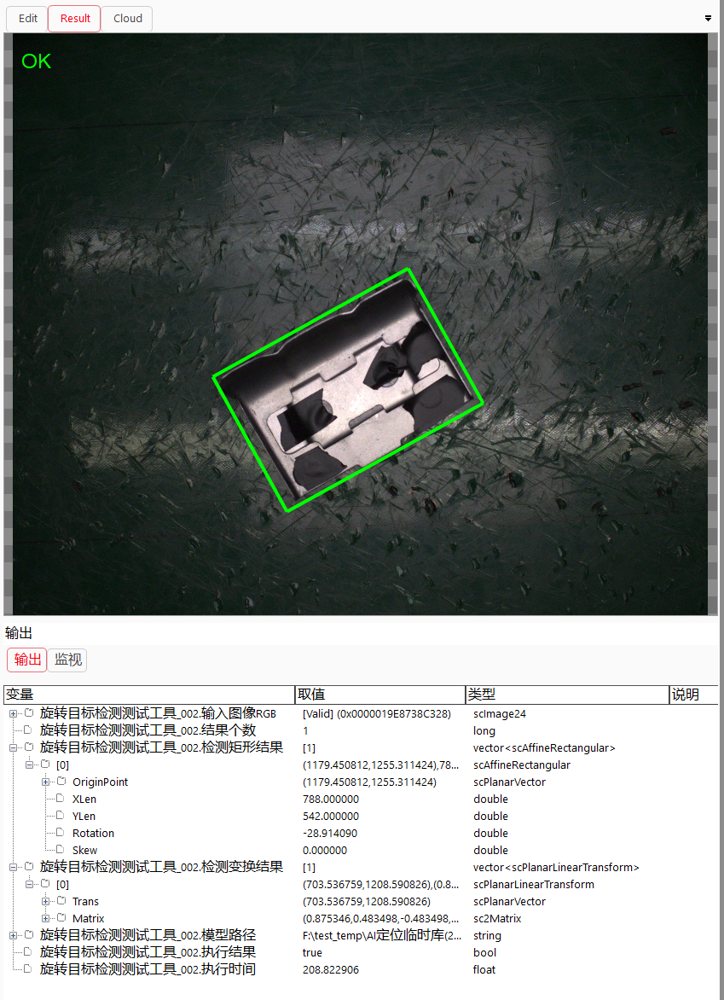

旋转目标检测测试工具用于定位复杂特征和目标并给出目标在图像上的外接仿射矩形和线性变换信息。该工具的输入为单张图像及训练好的网络模型，输出为目标外接仿射矩形结果和二维线性变换信息。
图a中的零件是要检测的目标，图b的绿框是检测出的目标。

复杂零件的定位和外接仿射矩形获取，便于后续进行仿射采样处理。
模型训练：通过训练来学习输入图像特征到输出目标框位置间的映射关系，这种映射关系是通过卷积神经网络来建立的。检测网络一般先用分类的主干网络对图像进行特征提取得到特征图，然后由特征图出发结合anchor框先验信息得到可能的结果矩形框，最后再根据置信度阈值对重叠区域进行非极大值抑制得到最终结果。特征提取网络部分有许多参数，训练中会学习这些参数。
检测测试：实时图像被输入到网络中，网络会输出该图像每一个目标框的位置、类别、置信度。

双击“旋转目标检测测试工具”，在弹出的数据链接对话框中，选择输入图像。


| 现象描述 | 解决方法 |
|---|---|
| 工具运行失败，提示“获取图像错误” | 检查输入图像是否设置，双击工具即可设置输入图像 |
| 工具运行失败，提示“调用深度学习算法错误” | 1、检查模型管理器中模型是否初始化成功；2、检查输入图像通道和宽高是否与模型相同 |
| 参数名称 | 参数说明 |
|---|---|
| 使用RGB输入图像 | “是”：数据链接中显示输入图像RGB参数；“否”：数据链接中显示输入图像参数 |
| 使用模型 | 要使用的分类模型名称 |
| 参数名称 | 参数说明 |
|---|---|
| 输入图像 | 输入的检测图像 |
| 结果个数 | 检测出的目标个数 |
| 检测矩形结果 | 检测获得的仿射矩形结果的集合 |
| 检测变换结果 | 检测获得的二维线性变换结果的集合 |
| 模型路径 | 检测时使用的模型路径 |
| 执行结果 | 工具执行是否成功 |
| 执行时间 | 工具执行耗时 |
| 参数名称 | 参数说明 |
|---|---|
| 输入图像 | 显示输入的检测图像 |
| 结果矩形块 | 显示结果矩形 |
| 执行结果 | 显示工具的执行结果 |
参见“\Samples\旋转目标检测测试工具.gvp”。